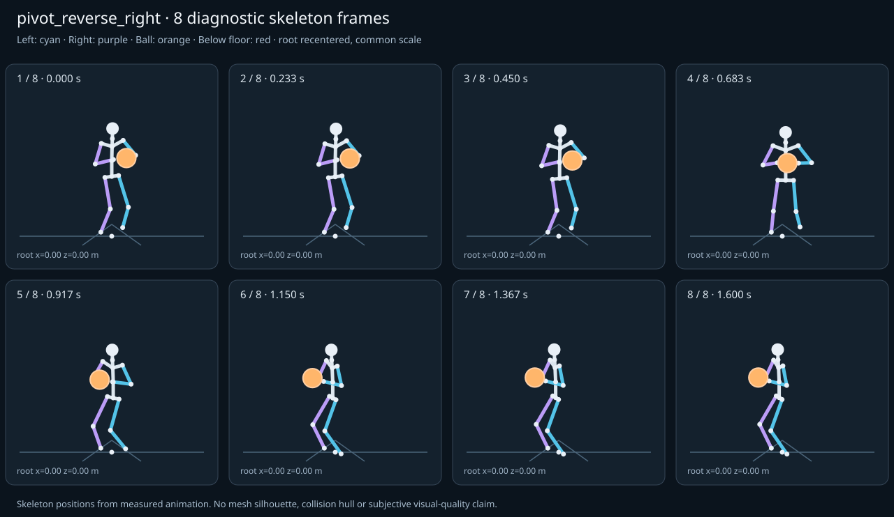

מה הוריד את הציון
- כניסה ויציאה מול המתנה: פער ב־יציאה מול המתנה; יחס חריגה 5.8797 (אדום)
כיסוי: 100%. לא כל מדד חל על כל קליפ; הסטטוס והראיות מפורטים למטה.
שמונה פריימים
תצוגת שלד אבחונית שנבנתה מהפריימים הנמדדים. צד שמאל בכחול, ימין בסגול, כדור בכתום. מיקום השורש ממורכז לצפייה; מיקומו בעולם כתוב בכל פריים.

המדדים והראיות
| מדד | מצב | ערך | ציון | סף ופרטי מדידה |
|---|---|---|---|---|
| החלקת רגליים | ירוק | 0 height ratio | 100 | {
"definition": {
"label": "החלקת רגליים",
"unit": "height ratio",
"green": 0.01,
"yellow": 0.035,
"weight": 18,
"description": "Maximum horizontal sole displacement from the first sample of each declared support window, divided by character height. Inferred support is used only when no windows were supplied."
},
"value": 0.000136,
"status": "green",
"score": 99.73,
"evidence": {
"coordinateSpace": "authored reference world (simulation-owned)",
"supportSource": "declared",
"windows": 3,
"samples": 134,
"maxDriftMeters": 0.00023,
"p95SpeedMetersPerSecond": 0.013147,
"worst": {
"bone": "RightFoot",
"t": 0.783333,
"start": 0,
"end": 1.6,
"driftMeters": 0.00023
}
}
} |
| חדירה לרצפה | ירוק | 0 height ratio | 100 | {
"definition": {
"label": "חדירה לרצפה",
"unit": "height ratio",
"green": 0.005,
"yellow": 0.02,
"weight": 15,
"description": "Maximum depth of the supplied sole probe points and all skeletal joint centers below the declared floor plane, divided by height. Sole probes are not a mesh collision audit."
},
"value": 0.000003,
"status": "green",
"score": 99.99,
"evidence": {
"samples": 1980,
"floorY": 0,
"probeKind": "declared sole probes plus skeletal joint centers (no mesh surfaces)",
"maxDepthMeters": 0.000005,
"worst": {
"t": 0.316667,
"bone": "RightFoot",
"depthMeters": 0.000005,
"y": -0.000005
}
}
} |
| קפיצות פוזה | ירוק | 0.379 discontinuity ratio | 92 | {
"definition": {
"label": "קפיצות פוזה",
"unit": "discontinuity ratio",
"green": 1,
"yellow": 2.5,
"weight": 18,
"description": "Maximum adjacent 60 Hz-equivalent step: root-relative marker displacement / 0.04 height, root-relative rotation / 15 degrees, or root translation / 0.08 height. A fast continuous action can also exceed this screening threshold."
},
"value": 0.379216,
"status": "green",
"score": 92.42,
"evidence": {
"adjacentPairs": 98,
"observations": 1666,
"maxDegrees60Hz": 2.929831,
"maxMarkerStepHeight60Hz": 0.015169,
"maxRootStepHeight60Hz": 0,
"worst": {
"ratio": 0.3792163772375028,
"t": 0.783333,
"previousTime": 0.766667,
"bone": "LeftForeArm",
"markerStepHeight60Hz": 0.015169,
"degrees60Hz": 2.88008
}
}
} |
| חריגות אנטומיות | ירוק | 0 % affected frames | 100 | {
"definition": {
"label": "חריגות אנטומיות",
"unit": "% affected frames",
"green": 0.5,
"yellow": 3,
"weight": 14,
"description": "Percentage of frames with elbow or knee flexion above 165 degrees, neck bend above 80 degrees, or a segment length changing by more than 5%. Optional calibrated hinge checks detect reverse knee flexion above 8 degrees. Conservative marker limits do not diagnose axial joint twist."
},
"value": 0,
"status": "green",
"score": 100,
"evidence": {
"testedFrames": 99,
"affectedFrames": 0,
"checks": 1683,
"maxLimbFlexionDegrees": 119.455258,
"maxRelativeSegmentLengthChange": 0,
"hingeDirectionChecked": true,
"axialTwistChecked": false,
"violations": []
}
} |
| מגע בכדור | ירוק | 0 height ratio | 100 | {
"definition": {
"label": "מגע בכדור",
"unit": "height ratio",
"green": 0.015,
"yellow": 0.05,
"weight": 13,
"description": "Maximum absolute distance from the ball surface to the sampled, bone-transformed declared contact point, divided by height. Events are evaluated at their exact declared times by interpolation."
},
"value": 0.000056,
"status": "green",
"score": 99.93,
"evidence": {
"radiusMeters": 0.12,
"samples": 198,
"missed": [],
"contacts": [
{
"t": 0.783333,
"bone": "RightHand",
"gapMeters": 0.000094,
"signedGapMeters": -0.000094,
"centerDistanceMeters": 0.119906,
"contactPoint": [
-0.309622,
1.022714,
0.272061
],
"ballCenter": [
-0.244673,
1.022714,
0.372853
],
"declaredLocalPoint": true
},
{
"t": 0.75,
"bone": "RightHand",
"gapMeters": 0.000093,
"signedGapMeters": -0.000093,
"centerDistanceMeters": 0.119907,
"contactPoint": [
-0.285316,
1.021798,
0.283815
],
"ballCenter": [
-0.210635,
1.021798,
0.377625
],
"declaredLocalPoint": true
},
{
"t": 0.816667,
"bone": "RightHand",
"gapMeters": 0.000092,
"signedGapMeters": -0.000092,
"centerDistanceMeters": 0.119908,
"contactPoint": [
-0.332553,
1.023829,
0.257998
],
"ballCenter": [
-0.277957,
1.023829,
0.364755
],
"declaredLocalPoint": true
},
{
"t": 0.716667,
"bone": "RightHand",
"gapMeters": 0.00009,
"signedGapMeters": -0.00009,
"centerDistanceMeters": 0.11991,
"contactPoint": [
-0.260262,
1.021086,
0.29299
],
"ballCenter": [
-0.176703,
1.021086,
0.378993
],
"declaredLocalPoint": true
},
{
"t": 0.85,
"bone": "RightHand",
"gapMeters": 0.000087,
"signedGapMeters": -0.000087,
"centerDistanceMeters": 0.119913,
"contactPoint": [
-0.353581,
1.025128,
0.242054
],
"ballCenter": [
-0.30968,
1.025128,
0.353642
],
"declaredLocalPoint": true
},
{
"t": 0.683333,
"bone": "RightHand",
"gapMeters": 0.000083,
"signedGapMeters": -0.000083,
"centerDistanceMeters": 0.119917,
"contactPoint": [
-0.235138,
1.020575,
0.299504
],
"ballCenter": [
-0.143727,
1.020575,
0.377119
],
"declaredLocalPoint": true
},
{
"t": 0.883333,
"bone": "RightHand",
"gapMeters": 0.00008,
"signedGapMeters": -0.00008,
"centerDistanceMeters": 0.11992,
"contactPoint": [
-0.372313,
1.026587,
0.224788
],
"ballCenter": [
-0.339149,
1.026587,
0.340031
],
"declaredLocalPoint": true
},
{
"t": 0.65,
"bone": "RightHand",
"gapMeters": 0.000075,
"signedGapMeters": -0.000075,
"centerDistanceMeters": 0.119925,
"contactPoint": [
-0.210616,
1.020248,
0.303454
],
"ballCenter": [
-0.112482,
1.020248,
0.372386
],
"declaredLocalPoint": true
},
{
"t": 0.916667,
"bone": "RightHand",
"gapMeters": 0.000071,
"signedGapMeters": -0.000071,
"centerDistanceMeters": 0.119929,
"contactPoint": [
-0.388515,
1.028178,
0.206834
],
"ballCenter": [
-0.365833,
1.028178,
0.324599
],
"declaredLocalPoint": true
},
{
"t": 0.616667,
"bone": "RightHand",
"gapMeters": 0.000065,
"signedGapMeters": -0.000065,
"centerDistanceMeters": 0.119935,
"contactPoint": [
-0.187321,
1.020075,
0.305099
],
"ballCenter": [
-0.083617,
1.020075,
0.365348
],
"declaredLocalPoint": true
},
{
"t": 0.95,
"bone": "RightHand",
"gapMeters": 0.00006,
"signedGapMeters": -0.00006,
"centerDistanceMeters": 0.11994,
"contactPoint": [
-0.402118,
1.029867,
0.188857
],
"ballCenter": [
-0.389382,
1.029867,
0.308118
],
"declaredLocalPoint": true
},
{
"t": 0.583333,
"bone": "RightHand",
"gapMeters": 0.000054,
"signedGapMeters": -0.000054,
"centerDistanceMeters": 0.119946,
"contactPoint": [
-0.165781,
1.020011,
0.304829
],
"ballCenter": [
-0.057621,
1.020011,
0.356679
],
"declaredLocalPoint": true
},
{
"t": 0.983333,
"bone": "RightHand",
"gapMeters": 0.000049,
"signedGapMeters": -0.000049,
"centerDistanceMeters": 0.119951,
"contactPoint": [
-0.413197,
1.031615,
0.171492
],
"ballCenter": [
-0.409637,
1.031616,
0.29139
],
"declaredLocalPoint": true
},
{
"t": 0.55,
"bone": "RightHand",
"gapMeters": 0.000043,
"signedGapMeters": -0.000043,
"centerDistanceMeters": 0.119957,
"contactPoint": [
-0.146412,
1.02002,
0.303113
],
"ballCenter": [
-0.034813,
1.02002,
0.347105
],
"declaredLocalPoint": true
},
{
"t": 1.016667,
"bone": "RightHand",
"gapMeters": 0.000038,
"signedGapMeters": -0.000038,
"centerDistanceMeters": 0.119962,
"contactPoint": [
-0.421948,
1.033384,
0.155312
],
"ballCenter": [
-0.426609,
1.033384,
0.275183
],
"declaredLocalPoint": true
},
{
"t": 0.516667,
"bone": "RightHand",
"gapMeters": 0.000032,
"signedGapMeters": -0.000032,
"centerDistanceMeters": 0.119968,
"contactPoint": [
-0.129497,
1.02022,
0.300452
],
"ballCenter": [
-0.015342,
1.02022,
0.337341
],
"declaredLocalPoint": true
},
{
"t": 1.05,
"bone": "RightHand",
"gapMeters": 0.000028,
"signedGapMeters": -0.000028,
"centerDistanceMeters": 0.119972,
"contactPoint": [
-0.428648,
1.035133,
0.140786
],
"ballCenter": [
-0.440446,
1.035133,
0.260176
],
"declaredLocalPoint": true
},
{
"t": 0.483333,
"bone": "RightHand",
"gapMeters": 0.000023,
"signedGapMeters": -0.000023,
"centerDistanceMeters": 0.119977,
"contactPoint": [
-0.115194,
1.020872,
0.297331
],
"ballCenter": [
0.000789,
1.020872,
0.328032
],
"declaredLocalPoint": true
},
{
"t": 1.083333,
"bone": "RightHand",
"gapMeters": 0.000019,
"signedGapMeters": -0.000019,
"centerDistanceMeters": 0.119981,
"contactPoint": [
-0.433615,
1.036821,
0.128263
],
"ballCenter": [
-0.451394,
1.036822,
0.246919
],
"declaredLocalPoint": true
},
{
"t": 0.45,
"bone": "RightHand",
"gapMeters": 0.000015,
"signedGapMeters": -0.000015,
"centerDistanceMeters": 0.119985,
"contactPoint": [
-0.103541,
1.022155,
0.294179
],
"ballCenter": [
0.013696,
1.022156,
0.31971
],
"declaredLocalPoint": true
}
],
"contactDetailsTruncated": true,
"coordinateSpace": "authored reference world (simulation-owned)"
}
} |
| כניסה ויציאה מול המתנה | אדום | 5.88 continuity ratio | 26 | {
"definition": {
"label": "כניסה ויציאה מול המתנה",
"unit": "continuity ratio",
"green": 1,
"yellow": 3,
"weight": 10,
"description": "Worst entry/exit mismatch to the best matching idle phase: RMS marker error / 0.04 height, RMS bone rotation / 25 degrees, or RMS endpoint velocity error / 0.75 height per second. Horizontal root translation is aligned; root height and body pose remain measurable."
},
"value": 5.879747,
"status": "red",
"score": 26,
"evidence": {
"entry": {
"ratio": 2.0858029615437057,
"t": 0,
"idleTime": 0.066667,
"markers": 17,
"rmsPositionHeight": 0.061026,
"rmsRotationDegrees": 52.145074,
"rmsVelocityHeightPerSecond": 0.007347,
"velocityEvaluated": true
},
"exit": {
"ratio": 5.879747113649284,
"t": 1.6,
"idleTime": 1.8,
"markers": 17,
"rmsPositionHeight": 0.23519,
"rmsRotationDegrees": 105.054983,
"rmsVelocityHeightPerSecond": 0.004487,
"velocityEvaluated": true
},
"worstEndpoint": "exit",
"alignment": "horizontal root translation; raw asset poses used when provided"
}
} |
| מהירות גוף מול צעדים | לא חל | — relative speed error | — | {
"definition": {
"label": "מהירות גוף מול צעדים",
"unit": "relative speed error",
"green": 0.2,
"yellow": 0.5,
"weight": 8,
"description": "Relative difference between average root travel speed and the median backward support-foot sweep speed relative to the root. Cadence and implied stride lengths are also reported. In-place clips need an explicit reference travel scenario; stationary actions are not scored as locomotion."
},
"value": null,
"status": "not-applicable",
"score": null,
"reason": "This action is not declared locomotion.",
"evidence": {}
} |
| סימטריה | ירוק | 0 relative mismatch | 100 | {
"definition": {
"label": "סימטריה",
"unit": "relative mismatch",
"green": 0.03,
"yellow": 0.1,
"weight": 4,
"description": "Maximum bilateral segment-length mismatch. Looping locomotion additionally compares reflected half-cycle leg markers; explicit pose symmetry compares simultaneous bilateral markers. One-sided actions retain unscored motion diagnostics, so a valid kick or dribble arm is not penalized for intentional asymmetry."
},
"value": 0,
"status": "green",
"score": 100,
"evidence": {
"mode": "mirrored clip pair",
"modeSource": "structural default for intentional asymmetry",
"structuralMismatch": 0,
"segments": [
{
"segment": "Arm-ForeArm",
"mismatch": 0
},
{
"segment": "ForeArm-Hand",
"mismatch": 0
},
{
"segment": "UpLeg-Leg",
"mismatch": 0
},
{
"segment": "Leg-Foot",
"mismatch": 0
}
],
"motionRmsHeight": 0,
"worstMotion": {
"t": 0.95,
"errorHeight": 0
},
"bilateralPoseRmsHeightUnscored": 0.03281,
"note": "One-sided authored actions are checked for structural symmetry only."
}
} |